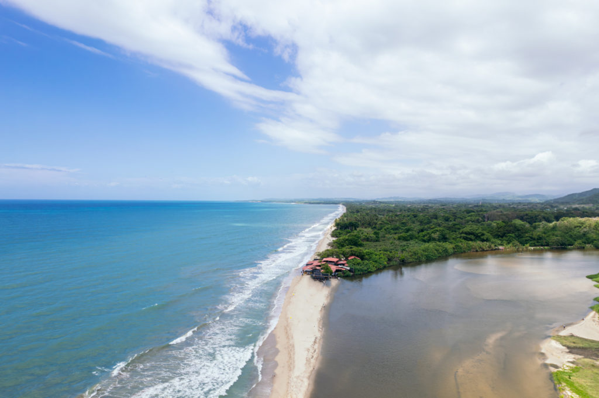
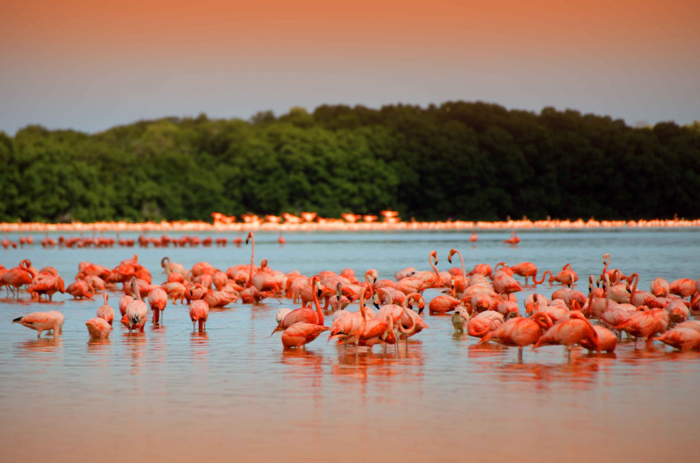
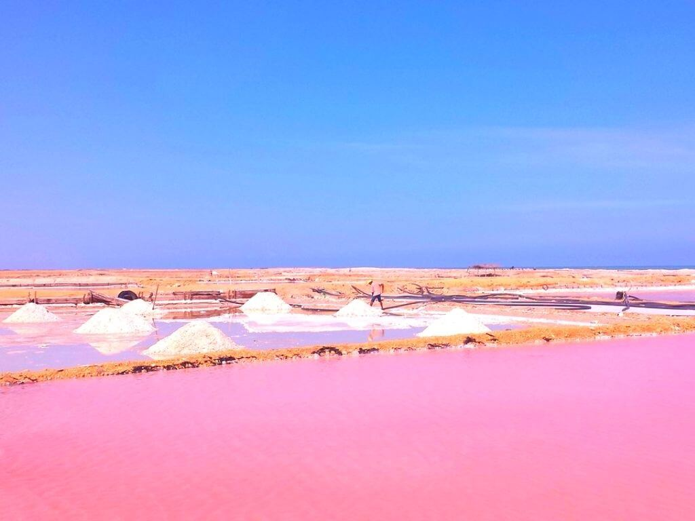
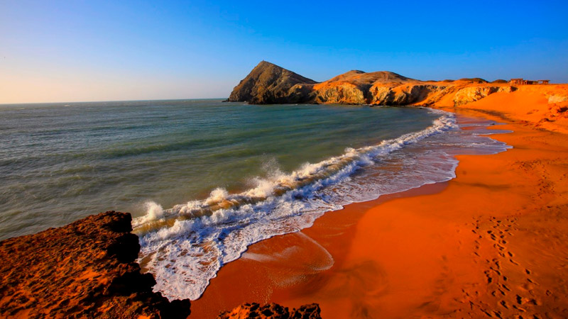

Región: Caribe
Es un destino turístico ubicado en el departamento de La Guajira, este lugar se encuentra en la costa norte del país, bañada por las aguas del mar Caribe y rodeada de exuberantes montañas y selva tropical.
Es un destino único para los amantes del ecoturismo y el avistamiento de aves, ubicado en el corregimiento de Camarones, es un verdadero paraíso para aquellos que desean explorar paisajes asombrosos, biodiversidad única y cultura indígena propia de la Guajira.
Sumérgete en un viaje fascinante a través del tiempo mientras exploras turísticamente las salinas de Manaure, un destino único que combina historia y tradiciones ancestrales en un entorno impresionante de la Guajira.
Uno de los destacados sitios turísticos de La Guajira, este destino desértico es conocido por sus paisajes deslumbrantes y sus hermosos atardeceres, además las playas en su mayoría son cercanas a colinas rocosas y acantilados imponentes que te dejarán sin aliento mientras exploras este lugar.
